Characters Series
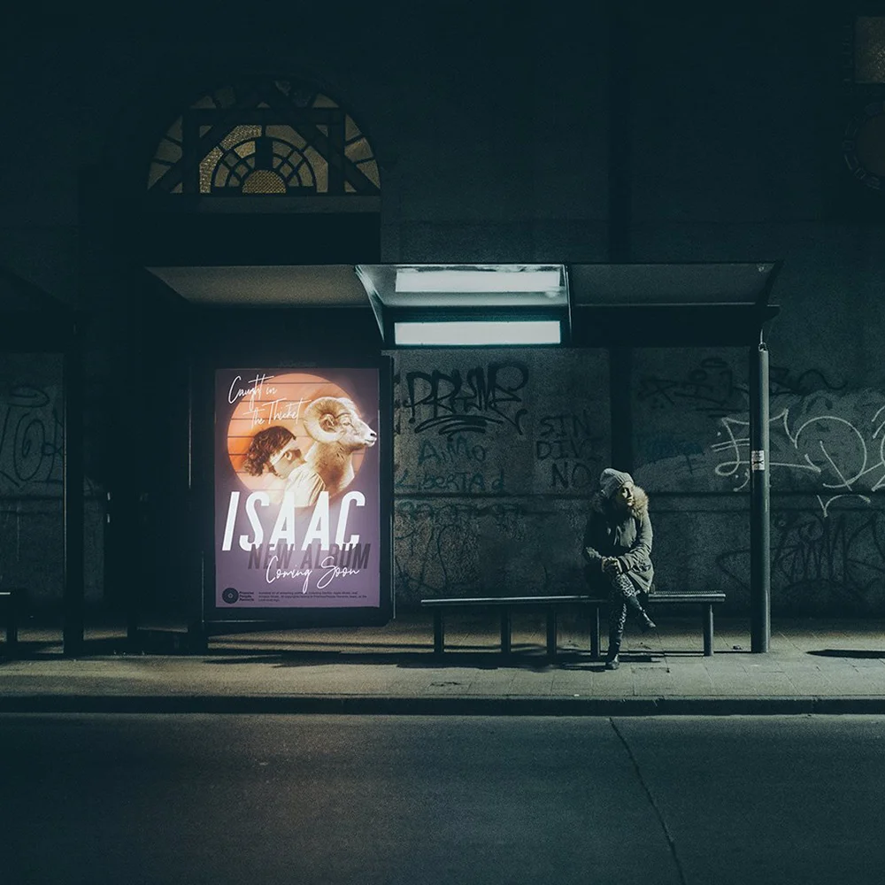
The Ask
Forest Hill was kicking off a long series about ancient figures, and they wanted to find a way to make those figures feel like their lessons could apply today.
The Result
We decided to treat these characters like posters up in an urban environment. Rather than compositing in Photoshop, time was spent recreating basic scenes in Cinema 4D — giving each poster physical rips, tactile texture, and more accurate lighting. If you look closely at some images, you can see the remains of the previous week's poster, much like posters glued up in a city.
Multiple scenes were created for each poster, giving us a week's worth of social content in preparation for each weekend. While each image and poster has its own style, the in-space application brought cohesion. The series became a favorite of those who witnessed it for years to come. Below are some of the many images used in the series, as well as a couple of shots of the Cinema 4D rig for two of the scenes.
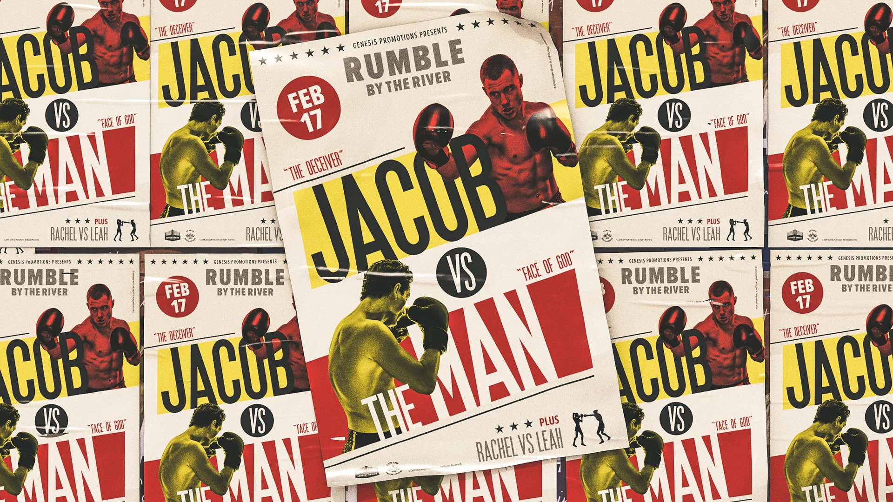
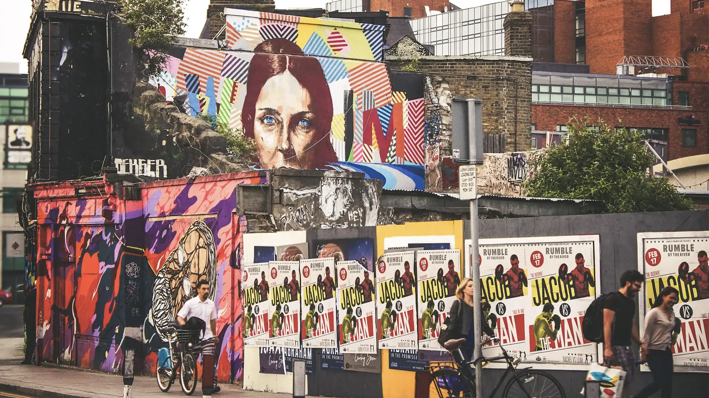
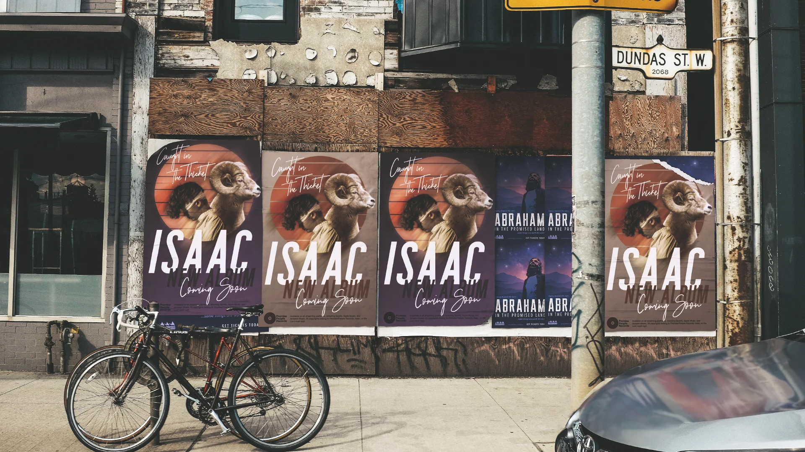
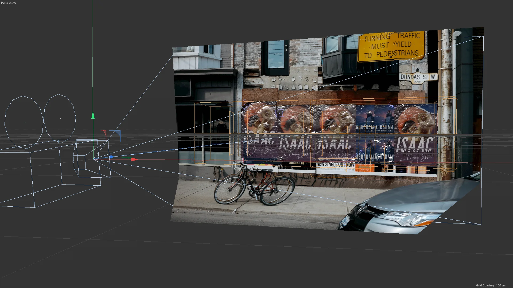
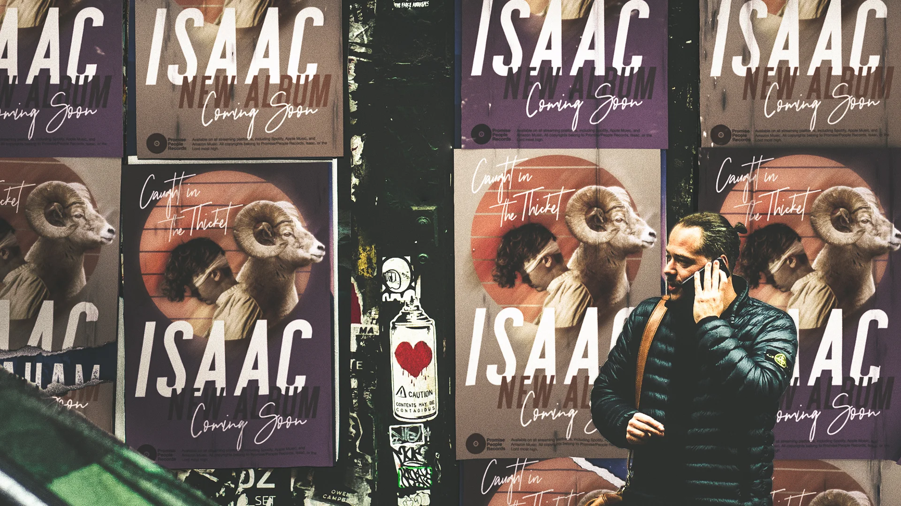
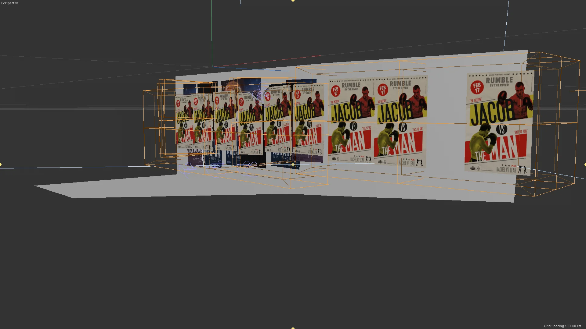
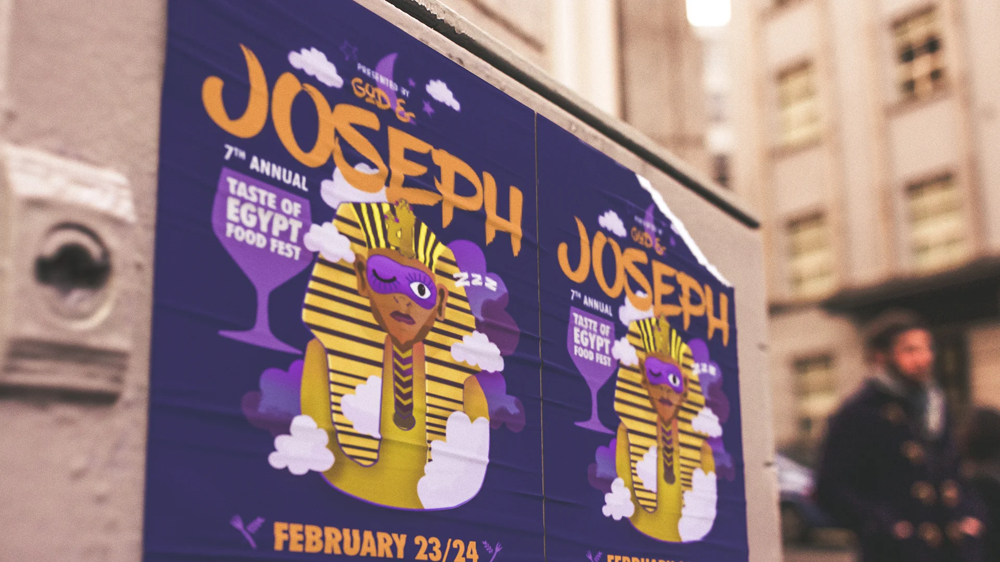
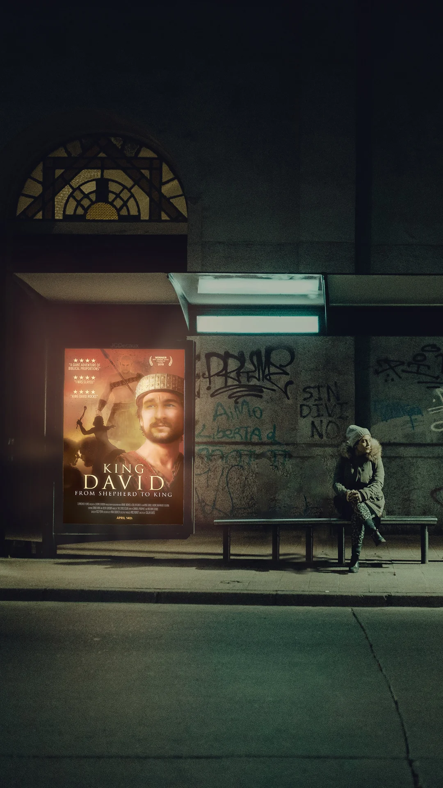
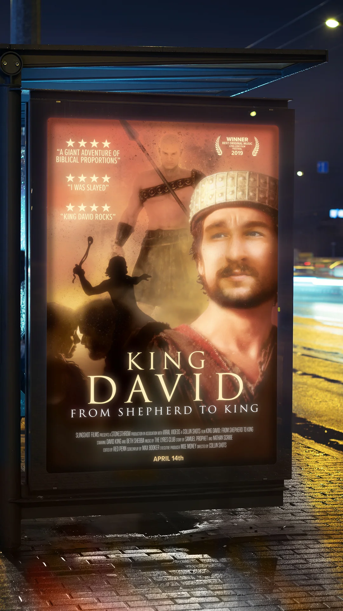
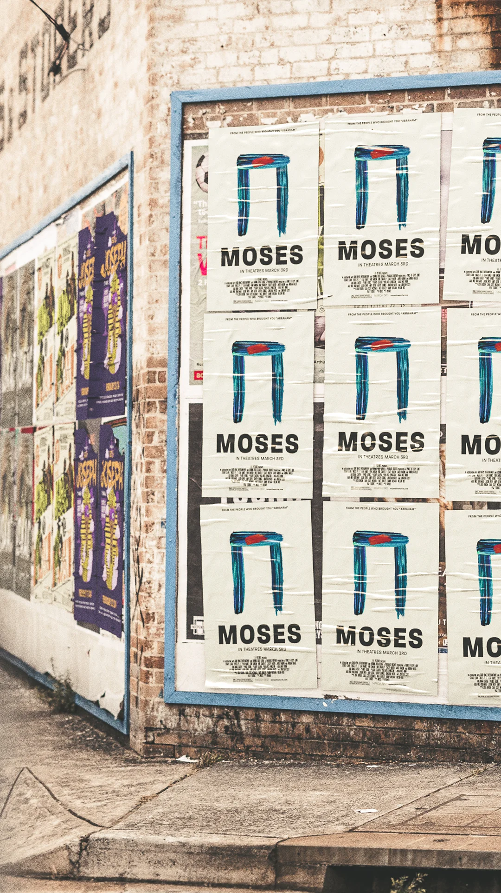
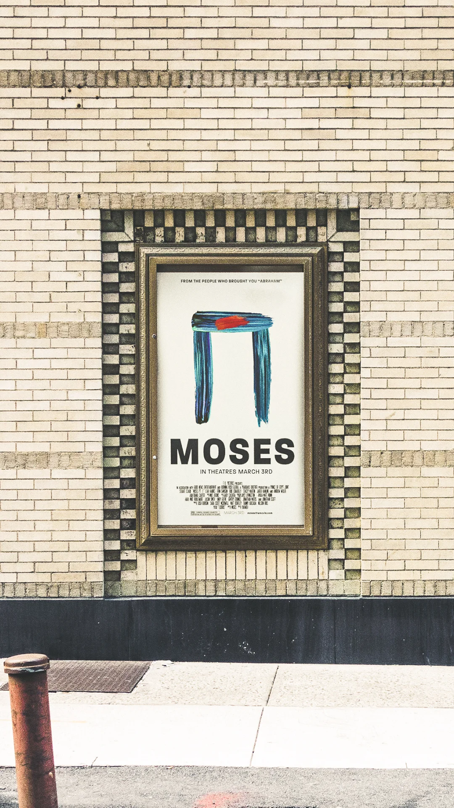
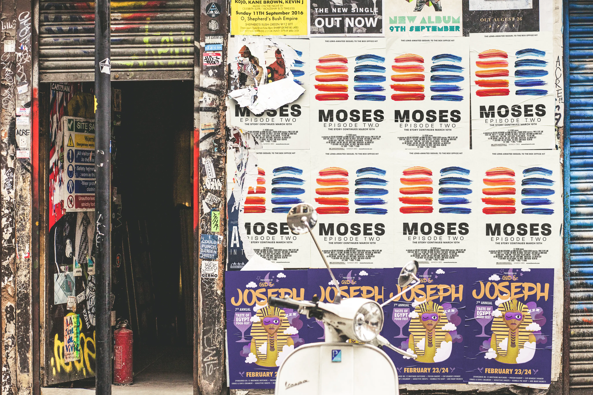
Credits
- Art Direction / Graphic Design: Jared Hanline
- Additional Poster Design: Leah Haines, Erin Swanson, Carl Etzel